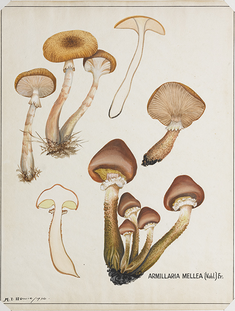

MyHeel Smart Insole
Get in touch with your feet
By Brooke Welsh, Rachel King and Luke Kelly
What is it?
A mycelium-grown smart insole containing electronic microprocessors to monitor foot health and encourage sensory awareness. The MyHeel smart insoles can be grown at home and allow wearers to monitor their foot health via a personalised web application. With these ethically grown smart insoles, wearers can also engage in interactive foot exercises that visualise movement via bespoke biofeedback technology.
How does it work?
Each customer will receive a Grow-It-Yourself (GIY) MyHeel kit containing everything they need to grow their own MyHeel smart insoles at home. The kit contains: a laser-cut cardboard model that can be assembled to form the basis of the grown structure, mycelium spawn and materials for growing, a custom microprocessing system to be implanted into the insole during growing, and step-by-step instructions detailing how the user can grow the MyHeel insoles at home.
Why Mycelium?
|  |  |
As a highly durable and fast-growing material, mycelium (i.e. the vegetative part of a fungus) has a wide range of applications in the field of Biodesign. Mycelium could potentially transform the orthotics design industry - by offering an eco-friendly alternative to regular orthotic manufacturing materials (such as carbon fibre and plastic) that inevitably end up in landfill. The MyHeel smart insoles will encourage bioremediation because, once the insole has eventually worn down, wearers will be able to compost the original insole, remove the electronic microprocessor, and regrow a new insole. The potential for MyHeel smart insoles to be grown by the wearers themselves means that they can be accessed by a wide range of people - including those in countries with limited access to foot health care aid.
Who are we?
The MyHeel smart insoles have been developed in 2021 by a team of three Design Computing students from the University of Sydney. As a team, we aimed to develop a podiatric product that helps increase awareness and encourages early intervention for people at risk of developing foot-related problems.
Watch us and Vote for us!
Watch our presentation and give us some love here!